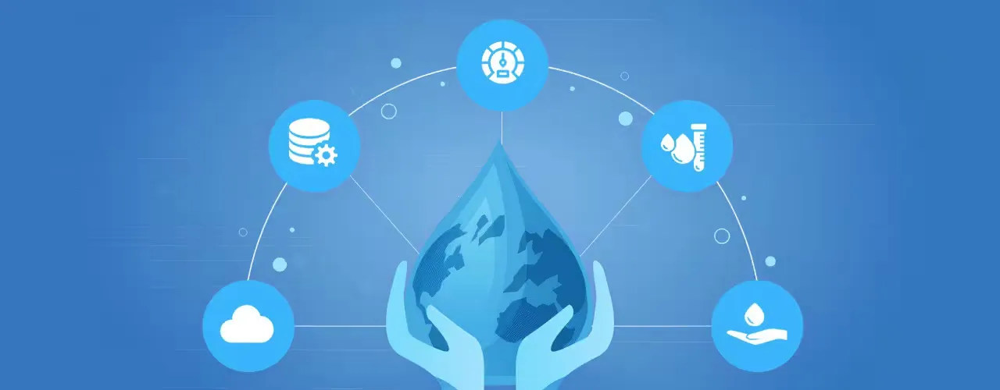

About the Client
A public-sector agency responsible for implementing and managing large-scale water supply projects across multiple regional jurisdictions. The client required a centralized platform to improve visibility, accelerate project timelines, and ensure efficient resource utilization across all phases of infrastructure delivery.
The Challenge
The agency faced significant roadblocks in effectively managing water infrastructure projects across six regions. Disconnected data sources, limited transparency, and outdated systems hindered oversight and decision-making.
Key challenges included:
- Difficulty integrating multiple data sources for unified project visibility
- No real-time mechanism to monitor physical and financial progress
- Inefficiencies in the existing centralized project monitoring system (CPMS)
- Inadequate tracking tools for land acquisition and deviation management
The agency needed a robust, scalable, and geospatially intelligent system to streamline oversight and support proactive governance.
The Solution
We developed and deployed the Digital Project Monitoring System (DPMS) – a GIS-based, centralized platform equipped with real-time dashboards, mobile data collection, and integrated analytics.
Key features included:
- Web-based GIS platform for unified project data visualization
- Interactive dashboards tracking KPIs such as timelines, progress, and resource allocation
- Mobile field app enabling on-site asset data capture and instant syncing with central systems
- Pipe network tracking from source to tap for better operational planning
- Automated reporting tools for timely insights and escalation
The platform enabled stakeholders to monitor all assets, projects, and dependencies from a single interface—supporting rapid issue resolution and informed decision-making.
The Impact
The DPMS transformed infrastructure governance and program execution for the client: